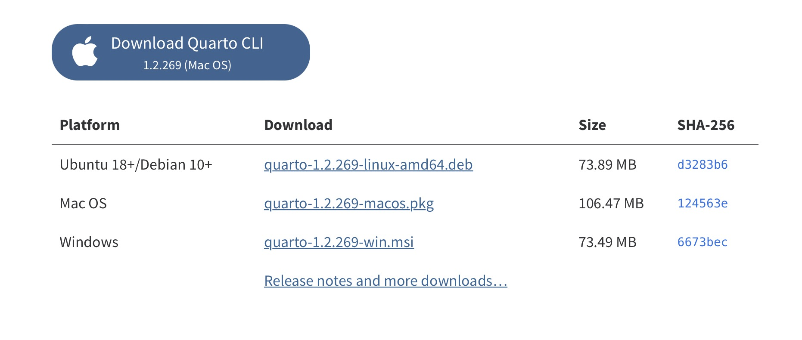
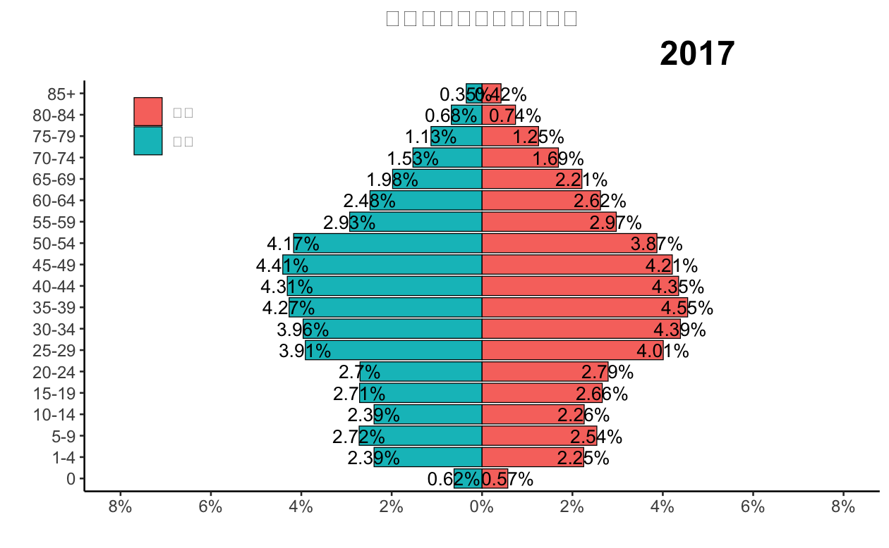
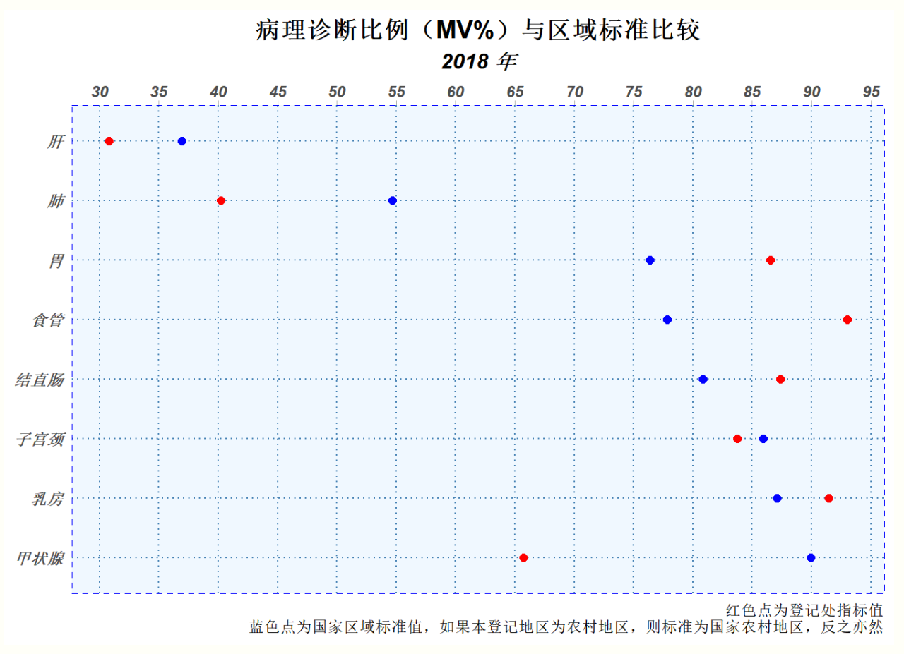

分享肿瘤登记、R语言、SAS、网页制作知识和技巧。
癌症5年生存率是评估癌症诊疗水平的一个重要指标，本篇博文介绍了如何利用R语言"periodR"包基于人群肿瘤登记数据计算人群癌症5年相对生存率。
Quarto自1.3以后的版本中将支持网页输出中包含其他输出格式（PDF、MS Word等）的链接，这对于多种格式的内容分享很重要。
本篇博文介绍了我们使用Rstudio进行数据分析或使用Quarto撰写报告时提高效率的一些方法和配置，通过这些配置可以大大提高我们工作的便捷性和效率，俗话说“磨刀不误砍柴工”，开始数据分析之前，先把工具“Rstudio,R”配置好，肯定事半功倍！
这篇博文介绍我使用quarto进行论文写作的一些技巧和经验，它们在无形中提高了我论文写作的效率，使论文的数据统计结果具有可能重复性，如果你还没听说过quarto，耐心的读完这篇博文，我相信会给你带来帮助。
今天我审读了一篇肿瘤临床预后影响因素分析的投稿论文，也想起了以前看过的几篇临床肿瘤预后影响因素的文章，我发现他们在进行数据分析的时候存在某些共同的问题，今天在这里和大家分享一下我的一些观点，希望能对肿瘤预后分析的朋友有所帮助。


